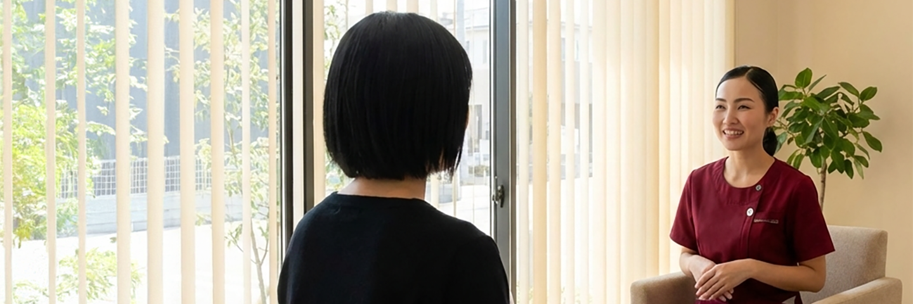

かんたんWEB予約
011-123-456

治療方針
必要な治療を、必要な分だけ
vision concept

当院では、すぐに治療を始めるのではなく、まずはしっかりとお話をする時間を大切にしています。患者さまのお悩みや不安に寄り添い、一緒に最適な治療を考えていきます。
すぐに歯を削らない、無理に進めない、選択肢をきちんと伝える。患者さまとの対話を通じ、信頼関係を築くことを第一に考えています。
検査結果や治療の必要性について、わかりやすく丁寧にご説明します。
なるべく専門用語は使わず、ご理解いただけるまでお話しします。
複数の治療方法がある場合、それぞれのメリット・デメリットをお伝えします。
患者さまご自身で納得して選んでいただきます。
すぐに治療が必要ない場合、経過を見守ることも大切な選択肢です。
定期的に確認しながら、適切なタイミングを一緒に考えます。
vision concept
vision concept
まずは、お悩みや気になることをお聞かせください。どんな小さなことでも構いません。
必要な検査を行い、お口の中の状態を詳しくご説明します。画像を見ながら分かりやすくお伝えします。
考えられる治療方法をいくつかご提案し、それぞれのメリット・デメリット、費用や期間をお伝えします。
患者さまがご納得され、ご了承いただいてから治療を始めます。急いで決める必要はありません。
治療の途中でも、疑問や不安があればいつでもお伝えください。
分からないまま進めることはありません。
vision concept
その他にも、どんなことでもお気軽にご相談ください。
「こんなこと聞いてもいいのかな」と思うことこそ、お話しください。